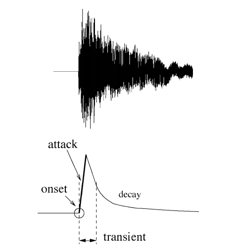
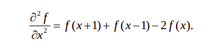

TASK 1
The task 1 consisted of:
Getting acquainted with basic understanding and theory:
○ What is an Audio made of?
○ Understanding various methods of filtering; their explanation on why one is better or worse
○ Filter design in Python
● Notes in Markdown for theory on above topics for future reference
● Develop basic examples on above topics to realize them with Python
SOUND
Sound is an analogous phenomenon – a physical phenomenon that could be represented as continuously changing voltages.
Computers that we use require a discrete representation of sound. In particular, when sound is captured as data in a computer, it is represented as a list of numbers. Capturing sound in a form that can be handled by a computer is a process called analog-to-digital conversion(ADC), whereby the amplitude of a sound wave is measured at evenly-spaced intervals in time – typically 44,100 times per second, or even more which is actually called the sampling rate..Once a computer has captured sound as a list of numbers, a whole host of mathematical operations can be performed on the sound to change its loudness, pitch, frequency balance, and so forth. In a digital audio editing program like Audition, a sound wave is stored as a list of numbers, corresponding to the amplitude of the sound at each point in time.
-
With regard to an audio filter, the frequency response shows how a filter boosts or attenuates the frequencies in the sound to which it is applied.
-
The graph in the frequency analysis view is called a frequency response graph or simply a frequency response.
| graph type | domain (x-axis) | range (y-axis) |
|---|---|---|
| impulse response | time | amplitude of sound at each moment in time |
| frequency response | frequency | magnitude of frequency across the audible spectrum of sound |
| phase response | frequency | phase of frequency across the audible spectrum of sound |


All you need to understand is that when sound is captured and put into a form that can be handled by a computer, it is nothing more than a list of numbers, each number representing the amplitude of sound at a moment in time.
Related to each impulse response graph are two other graphs – a frequency response graph that shows “how much” of each frequency is present in the instance of sound, and a phase response graph that shows the phase that each frequency component is in. Each of these two graphs covers the audible spectrum. In Section 3, you’ll be introduced to the mathematical process – the Fourier transform – that converts sound data from the time domain to the frequency and phase domain. Applying a Fourier transform to impulse response data – i.e., amplitude represented in the time domain – yields both frequency and phase information from which you can generate a frequency response graph and a phase response graph. The frequency response graph has the magnitude of the frequency on the y-axis on whatever scale is chosen for the graph. The phase response graph has phases ranging from -180° to 180° on the y-axis.
The main points to understand are these:
- A graph is a visualization of data.
- For any given instance of sound, you can analyze the data in terms of time, frequency, or phase, and you can graph the corresponding data.
- These different ways of representing sound – as amplitude of sound over time or as frequency and phase over the audible spectrum – contain essentially the same information.
- The Fourier transform can be used to transform the sound data from one domain of representation to another. The Fourier transform is the basis for processes applied at the user-level in sound measuring and editing software.
- When you work with sound, you look at it and edit it in whatever domain of representation is most appropriate for your purposes at the time. You’ll see this later in examples concerning frequency analysis of live performance spaces, room modes, precedence effect, and so forth.
FAST FOURIER TRANSFORM
The "literal" implementation of the transform is computationally expensive. The equation in Algorithm 2.1 has to be applied N times, where N is the number of audio samples. The equation itself has a summation that goes over N elements. Thus, the discrete Fourier transform takes on the order of N*N operations.
The fast Fourier transform (FFT) is a more efficient implementation of the Fourier transform that does on the order of N∗log2NN∗log2N operations. The algorithm is made more efficient by eliminating duplicate mathematical operations. The FFT is the version of the Fourier transform that you'll often see in audio software and applications. For example, Adobe Audition uses the FFT to generate its frequency analysis view.
Task 1
Understanding various methods of filtering
INTRODUCTION TO FILTERS
-
Filters are circuits that can isolate certain frequencies in order to reject/ amplify them from a digital audio signal.
-
Applications include:
- Radio Communications: Rejects all the frequencies apart from the desired signal.
- DC power supplies: Used to eliminate noise in high frequency present in AC input.
- Audio electronics: Used to channel different ranges of frequencies to woofers, speakers and tweeters.
- Analog-to-digital conversion: Filters are placed in front of an ADC input to minimize aliasing.
-
Some of the important terms are:
- Response Curves: Response curves are used to describe how a filter behaves. A response curve is simply a graph showing an attenuation ratio (VOUT / VIN) versus frequency . Attenuation is commonly expressed in units of decibels (dB). Frequency can be expressed in two forms: either the angular form ω (units are rad/s) or the more common form of f (units of Hz, i.e.. cycles per second).
- Bandwidth (β or B.W.): The bandwidth is the width of the passband, and the passband is the band of frequencies that do not experience significant attenuation when moving from the input of the filter to the output of the filter.
- Stopband frequency (fs): This is a particular frequency at which the attenuation reaches a specified value.
- For low-pass and high-pass filters, frequencies beyond the stopband frequency are referred to as the stopband.
- For band-pass and notch filters, two stopband frequencies exist. The frequencies between these two stopband frequencies are referred to as the stopband.
TYPES OF FILTERS
-
Low Pass Filters
-
High-pass Filters
-
Bandpass Filters
-
Band-reject Filters/Notch Filters

Different types of filters

Response curves of the different filters
-
They can also be classified as:
- Finite Impulse Response filters
- Infinite Impulse Response filters
FINITE IMPULSE RESPONSE FILTERS (FIR)
-
Impulse response of finite duration.
-
Provide Linear phase characteristics.
-
Always stable.
-
Can be used for more complex circuits.
INFINITE IMPULSE RESPONSE FILTERS (IIR)
- Impulse response of infinite duration.
- Non linear phase characteristics.
- They are unstable.
- Used for less complexity.
IIR FILTERS
BUTTERWORTH FILTERS
-
Designed to have a frequency response as flat as possible in the passband.
-
The frequency response of the Butterworth filter is maximally flat ( has no ripples) in the passband and rolls off towards zero in the stopband.

CHEBYSHEV FILTERS
- Have a steeper roll off than Butterworth filters.
- Minimise the error between the idealized and the actual filter characteristic over the range of the filter with ripples in passband.
- Because of presence of ripple in the pass band, it is not chosen in applications needing smoother response in passband.

ELLIPTIC FILTERS
- Equalised ripple behaviour in both passband and stop band.
- The amount of ripple in each band is independently adjustable, and no other filter of equal order can have a faster transition in gain between the passband and the stopband, for the given values of ripple.
- As the ripple in the stopband approaches 0, the filter becomes a type I Chebyshev filter.
- As the ripple in the passband approaches 0, the filter becomes a type II Chebyshev filter.
- As both ripple values approach 0, the filter becomes a Butterworth filter.

BESSEL FILTER
-
Analog linear filter with a maximally flat group/phase delay (maximally linear phase response), which preserves the wave shape of filtered signals in the passband.
-
Transition from the pass band to the stop band is much slower than for other filters.
-
But the group delay is practically constant in the passband.
-
Maximizes the flatness of the group delay curve at zero frequency.

A plot of the gain and group delay for a fourth-order low pass Bessel filter.
FIR FILTERS
HAMMING AND HANNING WINDOWS
-
Window function is a mathematical function that is zero-valued outside of some chosen interval, normally symmetric around the middle of the interval, usually near a maximum in the middle, and usually tapering away from the middle.

HANNING WINDOW

HAMMING WINDOW

DIFFERENCE
- Hanning window touches zero at both ends, removing any discontinuity. The Hamming window stops just shy of zero, meaning that the signal will still have a slight discontinuity.

COMPARING IIR FILTERS
-
Here is an image showing the gain of a discrete-time Butterworth filter next to other common filter types. All of these filters are fifth-order.
-
The Butterworth filter rolls off more slowly around the cut-off frequency than the Chebyshev filter or the Elliptic filter, but without ripple.
-
Chebyshev filters are sharper than the Butterworth filter; they are not as sharp as the elliptic one, but they show fewer ripples over the bandwidth.
-
Elliptic filters are sharper than all the others, but they show ripples on the whole bandwidth.

ADVANTAGES OF IIR OVER FIR FILTERS
- IIR filters achieve desired filtering characteristics using lesser memory.
- Has higher computational efficiency and shorter delay.
- Can be used to implement analog filter responses.
Task 1
What is an audio made of?
INTRODUCTION
- Audio signal is an electrical signal that represents a sound.
- Sound is a variation in the instantaneous air pressure .The variations are of air pressure above and below average (barometric) air pressure.
- Audio is an electrical (usually voltage) waveform that is analogous to the sound pressure waveform.
- Audio signals are synthesized by a transducer such as a microphone which converts the sound pressure variations into voltage variations.
- A higher voltage represents a higher pressure, and a lower voltage represents a lower pressure.
- The audio signal is usually of two types
* Analog audio * Digital audio - Analog audio are sampled and encoded into digital audio. Digital signal are represented as a series of binary numbers.

- In a digital system, an ADC converts physical sound to a digital signal using pulse code modulation/ any other encoding standard.
- DAC will convert digital audio signal back to physical audio through an amplifier and speaker.
- Components of a digital audio system include:
- Compression
- Storage
- Processing 4. Transmission
TASK 2
Audio Processing/Pre-processing
○ Noise filtering/basic filtering
○ Onset Detection
○ Feature Extraction
○ Spatial filtering - smoothing and sharpening
● Notes in Markdown for theory on above topics for future reference
● Develop examples and assignments on above topics to realize them
○ Cocktail Party Problem
Feature Extraction
Extraction of features is a very important part in analyzing and finding relations between different things. The data provided of audio cannot be understood by the models directly to convert them into an understandable format feature extraction is used. It is a process that explains most of the data but in an understandable way. Feature extraction is required for classification, prediction and recommendation algorithms.
The audio signal is a three-dimensional signal in which three axes represent time, amplitude and frequency.

Zero Crossing Rate
The Zero Crossing Rate is the rate of sign-changes along the signal. i.e. the rate at which the signal changes from positive to negative or vise versa. This feature has been used heavily in both speech recognition and music information retrieval. It usually has values for highly percussive sounds like those in metal and rock;
Example implementation:
# zero crossings
import librosa
path = 'audio.wav'
x, sr = librosa.load(path)
z_crossings = librosa.zero_crossing(x[:], pad = False)
print(z_crossing)
Spectral Centroid
It indicates where the "Centre of mass" for a sound is located and is calculated as the weighted mean of the frequencies in the music are same throughout then spectral centroid would be around a centre and if there are high frequencies at the end of sound then the centroid would be towards the end;
Example:
# Spectral centroid
import sklearn
spectral_centroids = librosa.features.spectral_centroid(x, sr = sr)[0]
# Computing the time variable for visualization
frames = range(len(spectral_centroids))
t = librosa.frames_to_time(frames)
# Normalising the spectral centroid for visualisation
def normalize(x, axis=0):
return sklearn.preprocessing.minmax_scale(x, axis=axis)
#Plotting the Spectral Centroid along the waveform
librosa.display.waveplot(x, sr=sr, alpha=0.4)
plt.plot(t, normalize(spectral_centroids), color='r')
Spectral Rolloff
Spectral rolloff is the frequency below which a specified percentage of the total spectral energy, e.g. 85%, lies.
Example:
spectral_rolloff = librosa.feature.spectral_rolloff(x, sr=sr)[0]
librosa.display.waveplot(x, sr=sr, alpha=0.4)
plt.plot(t, normalize(spectral_rolloff), color='r')
MFCC (Mel-Frequency Cepstral Coefficients)
This feature is one of the most important method to extract a feature of an audio signal and is used majorly whenever working on audio signals. The mel frequency cepstral coefficients (MFCCs) of a signal are a small set of features (usually about 10–20) which concisely describe the overall shape of a spectral envelope.
MFCCs are commonly derived as follows:
- Take the Fourier transform of (a windowed excerpt of) a signal.
- Map the powers of the spectrum obtained above onto the mel scale, using triangular overlapping windows.
- Take the logs of the powers at each of the mel frequencies.
- Take the discrete cosine transform of the list of mel log powers, as if it were a signal.
- The MFCCs are the amplitudes of the resulting spectrum.
Example:
mfccs = librosa.feature.mfcc(x, sr=sr)
#print(mfccs.shape)
#Displaying the MFCCs:
librosa.display.specshow(mfccs, sr=sr, x_axis='time')
Other Important features
-
LPCC
-
MFCC
Audio Feature Extraction
-
Reduce audio data by extracting information about:
- Pitch
- Timbre
- Rhythm
-
Audio descriptors(MPEG7) can also give better insight on audio.
- Low-level Descriptors
- Spectral features
- Parametric features
- Temporal features
- High Level Descriptors
- General sound recognition
- Instrumental Timbre
- Spoken content
- Audio signature description
- Low-level Descriptors
Best reported accuracy
As referred to a conference paper published in 2017,
- For environmental sounds, features obtained using a combination of MFCC(Mel-frequency cepstrum coefficients) and MP(Matching Pursuit) features.
- MFCC is obtained by first computing the short time Fourier transform of the signal. The spectrum values of each frame are then grouped into bands using a set of triangular filters .
MEL Features
MFCC
In sound processing, the mel-frequency cepstrum (MFC) is a representation of the short-term power spectrum of a sound, based on a linear cosine transform of a log power spectrum on a nonlinear mel scale of frequency. Mel-frequency cepstral coefficients (MFCCs) are coefficients that collectively make up an MFC. They are derived from a type of cepstral representation of the audio clip (a nonlinear "spectrum-of-a-spectrum").

Melspectrogram

Chroma Features
In music, the term chroma feature or chromagram closely relates to the twelve different pitch classes. Chroma-based features, which are also referred to as "pitch class profiles", are a powerful tool for analyzing music whose pitches can be meaningfully categorized (often into twelve categories) and whose tuning approximates to the equal-tempered scale. One main property of chroma features is that they capture harmonic and melodic characteristics of music, while being robust to changes in timbre and instrumentation.
Key Differences among Speech, Music and Environmental Sounds
Referring to this paper:
- Firstly, music and speech signals present a certain periodicity that can be observed when analyzing these signals in the time domain (see Figure 3). Although with some exceptions (e.g., some natural sounds such as bird chirps or cricket sounds), the periodicity in environmental sounds may not be so evident.

- Secondly, when analysed in the frequency domain, it can be generally determined that the complexity of the spectrum of environmental sounds (e.g., the sound of a passing car) is notably larger than that of speech or music signals, as depicted in Figure 4. Moreover, it can be observed that speech and music signals usually present harmonic structures in their spectra, a trait that is not that common in environmental sounds, as mentioned before.

-
Thirdly, notice that both speech and music sounds are composed of a limited dictionary of sound units: phonemes and notes, respectively. On the contrary, the range of environmental sounds is theoretically infinite, since any occurring sound in the environment may be included in this category (i.e., originated from noise, artificial or natural sound sources, see Figure 1).
-
Furthermore, there exists a key difference between these types of signals. In speech and music, phonemes and musical notes are combined so as to obtain meaningful sequences that are actually transmitting a particular semantic or aesthetic message. As opposed, the sequences on environmental sounds do not follow any rule or predefined grammar, although they may convey some kind of meaning (e.g., bird chirps or cricket sounds). Unlike speech and music, also other important information is unknown, such as the duration of the sound events or the proportion between harmonic and non-harmonic spectral structure.
ONSET DETECTION METHODS
Approaches to onset detection can operate in the time domain, frequency domain, phase domain, or complex domain, and include looking for:
- Increases in spectral energy
- Changes in spectral energy distribution (spectral flux) or phase
- Changes in detected pitch - e.g. using a polyphonic pitch detection algorithm
- Spectral patterns recognisable by machine learning techniques such as neural networks.
Transients vs. Onsets vs. Attacks
A central issue here is to make a clear distinction between the related concepts of transients, onsets and attacks because different applications have different needs. The similarities and differences between these key concepts are important to consider; it is similarly important to categorize all related approaches. Fig. 1 shows, in the simple case of an isolated note, how one could differentiate these notions.
- The attack of the note is the time interval during which the amplitude envelope increases.
- The concept of transient is more difficult to describe precisely. As apreliminary informal definition, transients are short intervals during which the signal evolves quickly in some nontrivial or relatively unpredictable way. In the case of acoustic instruments, the transient often corresponds to the period during which the excitation (e.g., a hammer strike) is applied and then damped, leaving only the slow decay at the resonance frequencies of the body. Central to this time duration problem is the issue of the useful time resolution: we will assume that the human ear cannot distinguish between two transients less than 10 ms apart. Note that the release or offset of a sustained sound can also be considered a transient period.
- The onset of the note is a single instant chosen to mark the temporally extended transient. In most cases, it will coincide with the start of the transient, or the earliest time at which the transient can be reliably detected.
Figure shows, in the simple case of an isolated note, how one could differentiate these notions.

ALGORITHM FOR ONSET DETECTION
Usually this algorithm is used for onset detection:
1. PREPROCESSING
- The concept of pre-processing implies the transformation of the original signal in order to accentuate or attenuate various aspects of the signal according to their relevance to the task in hand.
- It is an optional step that derives its relevance from the process or processes to be subsequently performed. There are a number of different treatments that can be applied to a musical signal in order to facilitate the task of onset detection.
- There are a number of different treatments that can be applied to a musical signal, but Multiple Bands and Transient / Steady state separation are communally used.
2 . REDUCTION
- In the context of onset detection, the concept of reduction refers to the process of transforming the audio signal into a highly subsampled detection function which manifests the occurrence of transients in the original signal.
- This is the key process in a wide class of onset detection schemes and will therefore be the focus of most of our review. We will broadly divide reduction methods in two groups :
- Methods based on the use of explicitly predefined signal features
- Methods based on probabilistic signal models.
3. PEAK-PICKING
- If the detection function has been suitably designed, then onsets or other abrupt events will give rise to well-localized identifiable features in the detection function.
- Commonly, these features are local maxima (i.e. peaks), generally subject to some level of variability in size and shape, and masked by ‘noise’, either due to actual noise in the signal, or other aspects of the signal not specifically to do with onsets, such as vibrato.
- Therefore a robust peak-picking algorithm is needed to estimate the onset times of events within the analysis signal. We will divide the process of peak-picking a detection function in three steps: post-processing, thresholding, and a final decision process.

Onset Detection Functions
Onset detection function(ODF) is primarily an undersampled version of the original music signal. We divide the signal into partially overlapping frames and the ODF consists of one value for each frame. By the definition of an onset, we can say that onset detection is the process of identifying which parts of a signal are relatively unpredictable.
Hence, each value in an ODF should give a good indication as to the measure of the unpredictability of that frame. The vector of these values (obtained using methods discussed later) is passed to the peak-detection algorithm for onset detection.
Types of ODFs
Some standard ODFs are:
- Energy Method
- Spectral Difference Method
- Complex Domain Method
Energy Method :
- This is the most simple and computationally efficient method. In this method, we assume that the onsets correspond to a higher energy component than the steady state notes in the music signal.
Spectral Difference Method :
-
This method is successful in detecting onsets in polyphonic signals and soft onsets.
-
This is achieved by identifying time varying changes in a frequency domain representation of audio signal.
**Complex Domain Method **:
- Insted of making predictions only on the magnitudes like a spectral difference method, this method attempts to improve the prediction for the next value of a given bin using combined magnitude and phase information.
Spatial Filtering
-
Spatial filtering is an image processing technique for changing the intensities of a pixel according to the intensities of the neighboring pixels.
-
Using spatial filtering, the image is transformed (convoluted) based on a kernel H which has certain height and width (x,y), defining both the area and the weight of the pixels within the initial image that will replace the value of the image. The corresponding process is to convolve the input image I(i,j) with the filter function H(x,y), to produce the new filtered image:
$$ I' (i, j) = I(i, j) * H(x, y) $$

Classification
-
Classification on the basis of linearity 1. Linear Spatial Filter 2. Non-Linear Spatial Filter
-
General Classification
-
Smoothing Spatial Filters
-
Mean Filter (or smoothing linear filter)
-> Averaging Filter
-> Weighted Averaging Filter
-
Order Statistic Filter
-> Minimum Filter
-> Maximum Filter
-> Median Filter
-
-
Sharpening Spatial Filters (Derivative Filters)
- First Order Derivative
- Second Order Derivative
-
Linear Spatial Filters
The result is the sum of products of the mask coefficients with the corresponding pixels directly under the mask.
The coefficient w(0,0) coincides with image value f(x,y), indicating that the mask is centered at (x,y) when the computation of sum of products takes place.
For a mask of size m*n, we assume that m-2a+1 and n=2b+1, where a and b are non-negative integer. Then m and n are odd.
In general, linear filtering of an image f of size M*N with a filter mask of size m*n is given by the expression: $$ g(x, y) = \sum_{s = -1}^{a} \sum_{t = -b}^{b} w(s,t) \ *\ f (x+s, y+t) $$ The process of linear filtering similar to a frequency domain concept called "convolution"
Non Linear Spatial Filter
Nonlinear spatial filters also operate on neighborhoods, and the mechanics of sliding a mask past an image are the same as was just outlined.
The filtering operation is based conditionally on the values of the pixels in the neighborhood under consideration
Smoothing Spatial Filters
Smoothing filters are used for flurring and for noise reduction
- Blurring is used in preprocessing steps, such as removal of small details from an image prior to object extraction and bridiging of small gaps in lines or curves.
- Noise reduction can be accomplished by blurring
Mean Filters
Here the idea is replacing the value of every pixel in an image by the average of the gray levels in the neighborhood defined by the filter mask.
The general implementation for filtering an M*N image with weighted averaging filter of size m*n is given by expression:
Order Statistic Filters
There are mainly 3 types of order statistic filters: max, min and median order statistic filter. As name suggests we replace the middle element of the window by maximum, minimum or median value respectively.
Sharpening Spatial Filters
-
Purpose of sharpening spatial filters are opposite of the smoothing filters. its main focus is removal of blurring and highlight the edges.
-
We are interested in the behavior of these derivatives in areas of constant gray level(flat segments), at the onset and end of discontinuities(step and ramp discontinuities), and along gray-level ramps.
-
These types of discontinuities can be noise points, lines, and edges.
First order derivative:
-
Must be zero in flat segments
-
Must be nonzero at the onset of a gray-level step or ramp
-
Must be nonzero along ramps.
Basic definition of the first order derivative of a one-dimentional function f(x) is:
Second order derivative:
-
Must be zero in flat areas.
-
Must be nonzero at the onset and end of a gray-level step or ramp.
-
Must be zero along ramps of constant slope.
Definition:

Cocktail Party problem
Audio Source Separation
Audio source separation is the process of extracting individual sound sources (e. g., a single flute) from a mixture of sounds (e. g., a recording of a concert band using a single microphone).
Using RPCA
import numpy as np
import matplotlib.pyplot as plt
from untwist.data import Wave, RatioMask
from untwist.transforms import STFT, ISTFT
from untwist.factorizations import RPCA
stft =STFT()
istft =ISTFT()
rpca =RPCA(iterations = 100)
x=Wave.read("mix.wav")
X=stft.process(x)
# this may take some time
(L,S) =rpca.process(X.magnitude())
M=RatioMask(np.abs(S), np.abs(L))
v=istft.process(X *M)
v.write("vocal_estimate.wav")
References
Task 3
Task 3
Urban Sounds Classification
Dataset
About the dataset
Link to uploaded dataset: https://drive.google.com/folderview?id=14u-bfL8kPRUDggPCSVio25Bw7LSuoChK
this dataset contains 8732 labelled sound excerpts (<=4s) of urban sounds from 10 classes: air_conditioner, car_horn, children_playing, dog_bark, drilling, engine_idling, gun_shot, jackhammer, siren, and street_music
According to the original paper, sound excerpts are taken from www.freesound.org and are already pre-sorted into ten folds for cross-validation.
The meta-data contains 8 columns.
- slice_file_name: name of the audio file
- fsID: FreesoundID of the recording where the excerpt is taken from
- start: start time of the slice
- end: end time of the slice
- salience: salience rating of the sound. 1 = foreground, 2 = background
- fold: The fold number (1–10) to which this file has been allocated
- classID: 0 = air_conditioner 1 = car_horn 2 = children_playing 3 = dog_bark 4 = drilling 5 = engine_idling 6 = gun_shot 7 = jackhammer 8 = siren 9 = street_music
- class: class name
- There are two classes (car_horn, gun_shot) which have a bit less than half amount of entries compared to other 8 classes.

Variables in the data
-
The sampling rate, bit depth, and number of channels are the same as those of the original file uploaded to Freesound (and hence may vary from file to file).”
-
It means there might be many different sample rates in the data, which means even with the same duration, the number of samples will be different.
-
Moreover, different bit depth means, they can take different rage of values.
-
Some of them might be stereo, while others are mono.
Pre-processing to be applied
- Convert everything to Mono audio.
- Sample rate conversion to 22.05 khz.
- Equalise bit depth.
References
TASK 4
Challenge Project
● Identify the onset of “ Intro ” in a TV show and develop a skip button/interface/UI
● Study the already present systems (if any): how Netflix and Amazon Prime do it?
● Develop proper tutorial, solutions and well documented code for the same
Intro Detection and Skipping in Videos
Media consumption has shown a tremendous increase in recent years, and with this increase, new audience expectations are put on the features offered by media-streaming services. One of these expectations is the ability to skip redundant content, which most probably is not of interest to the user. In this work, intro sequences which have sufficient length and a high degree of image similarity across all episodes of a show is targeted for detection.
Existing Solutions
1. With the Help of Black Screen:
It tries to detect intros using two types of input available: video frames and audio signals.
- Video Frames: Usually there is always a black screen just after the intro ends, so it averages over the greyscale values for all video frames upto a few minutes and then takes the minimum of these values. Since the black screen will have the lowest intensity value, we get the time when our intro ends.
- Audio Signals: So the above black screen is accompanied with a 0.5-1 second of silence gap. They take the root mean square of sound energy and zero crossing rate upto a few minutes and then compare their values and if both of them are below a 'certain' threshold for 0.5-1 second, then that gap is termed as the silent gap.
2. Netflix's Algo:
To detect Intro first the algorithm looks for similar frames across multiple video assets. Then the visual fingerprints are extracted from a collection of certain frames along with their subsequent image histograms. These fingerprints are later used as a comparative model, if similar frames appear in another video they are marked as either the beginning or end of the intro sequence.
3. Notrobro: (No intro bro)
This algorithm was developed in GSoC'18 in project by XBMC Foundation (Kodi)
It is basically, if we have 2 episodes of the same TV show, then we collect all the frames at the scene change points, compare them efficiently by computing image hashes and output the start/end times where the frames match. The basic idea behind this is that two episodes of the same TV show are bound to have matching frames during the duration of the intro/outro, so we can utilize this property to generate the intro/outro timings of all the episodes of a show.
4. Plex's approch:
They used audio(title song) for intro detection. First they created audio print of theme song and then matched against the audio of the 10 minutes of that episode.
Intro Skip Button
-
Can be done using Cross correlation and onset detection.
-
Some possible ways of doing this are
Audio Tagging
This is the most likely method. Netflix takes the audio sample of a show’s intro — Friends for example, and queries all the episodes to find where that audio sample appears. For accuracy they can apply conditions like only looking for the audio in the first 2 mins. To be even more accurate to make sure the intro’s beginning has the shows’ title for example, apply a little computer vision.
Machine Learning
The company is all about machine learning, from understanding what users like, don’t like, tracking behaviour, offering recommendations etc.
We can consider the possibility Netflix is learning just from the show Friends (or a base show) and teaching a machine to identify what an intro is without feeding it the audio sample or any visual cues.
So the machine learning algo will discover on its own to apply what it learned from Friends (a base show) to a show like Fraiser or The Office. It will identify an audio sample appearing on all episodes (pattern) around the same time (condition) mixed with some visual cues (condition) like the show’s title.
Audio Fingerprinting
Shazam
One of the first algorithms developed in the industry was developed by researchers from Shazam. Their solution is to identify the strongest peaks in the spectrogram, and to store the relative signatures of these peaks. The algorithm is illustrated in the image below:


Red circles indicate the strongest peaks and red lines connect peaks that are close to each other. The result is a “spider web” over the spectrogram. The web is much sparser than the original spectrogram and can therefore be stored more efficiently. Furthermore, the web is robust to distortions like white noise, since that will have a relatively small impact on the strongest peaks. The web therefore acts like an audio fingerprint.
Some challenges remain. For instance, it is not immediately clear just how many peaks and connections we should store. The more intricate the web we create, the larger the dataset and the harder it is to compare with a reference. However, if the web is made simpler, the risk that it is impacted by noise increases, as well as the chance of a false positive: falsely reporting a match with a reference.
Furthermore, although many types of noise will not impact the strongest peaks, some distortions will shift or modify even the strongest peaks (for instance, low quality speakers). The web may also break if a strong burst of noise (for instance, someone talking) takes out an essential section.
Audio Matching
Once the fingerprints have been extracted, the next challenge is to identify the content to which the fingerprint belongs. This process is often called audio matching (although arguably, it should be called fingerprint matching). In order to perform the matching, we must first establish a reference database. Essentially, the reference database is acquired by extracting fingerprints from the reference content. The reference content may be pre-existing (e.g. a film), or could be a live feed (e.g. a TV channel). The size of the reference database will generally determine the solution architecture.
TASK 5
Audio Captioning
● Caption the provided audio/video files
● These captions then can be utilised to jump into the particular section of the audio/video sample